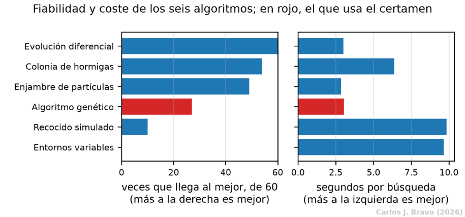
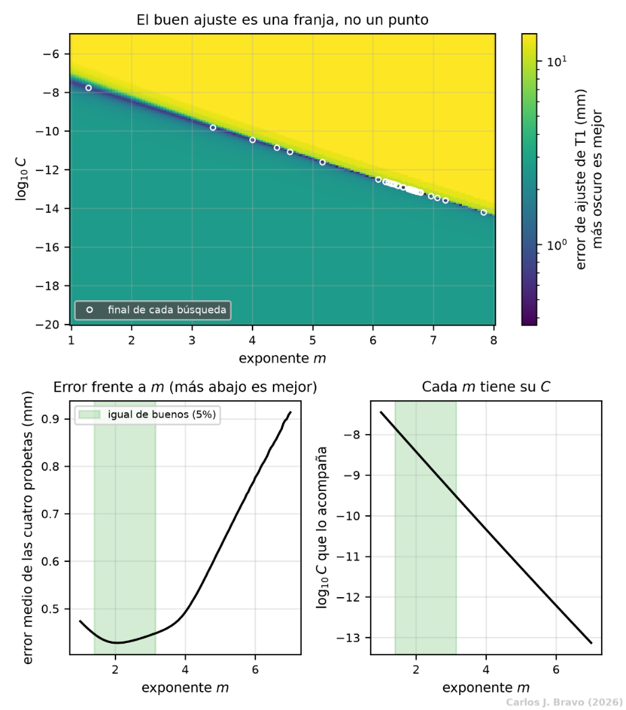
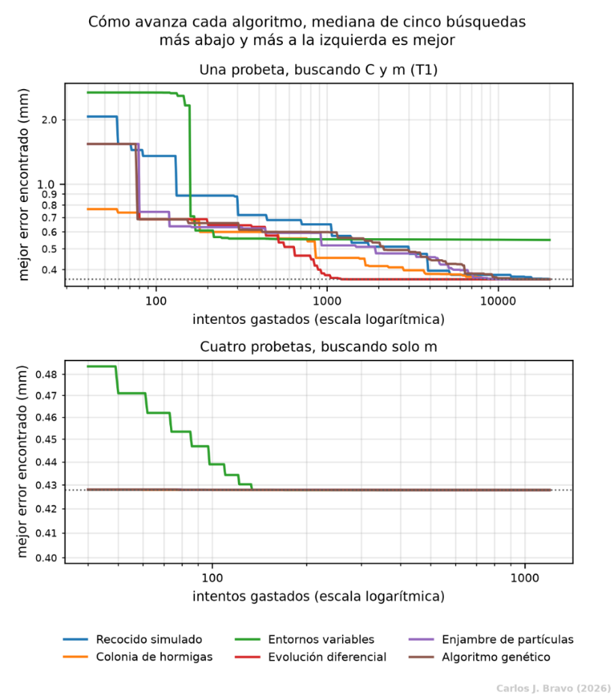
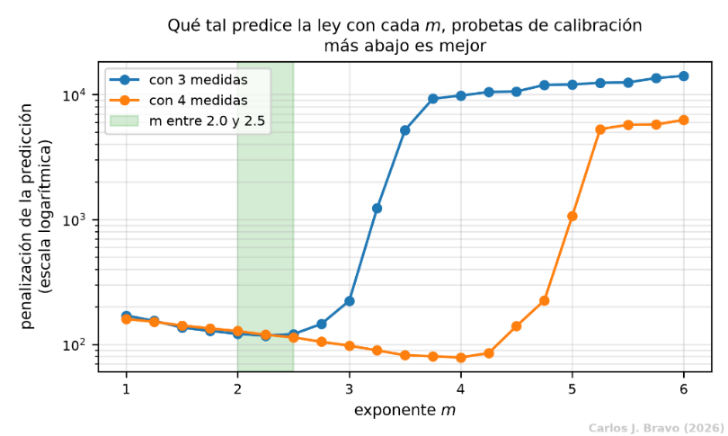

- 1. El problema
- 2. La señal
- 3. La ley física
- 4. El modelo
- 5. Conclusiones
- Bibliografía
Un espacio de búsqueda acotado para la ley física
Cuando la señal ultrasónica se acaba, el modelo depende en gran medida de una ecuación de la mecánica de fractura. Esa ecuación tiene dos constantes que nadie ha publicado para estas probetas. Esta parte cuenta cómo se encontraron, y por qué encontrarlas resultó ser más un problema de elegir que de buscar.
Por qué hay que calibrar la ley
Desde los años sesenta se sabe que, en el tramo central de su vida, una grieta por fatiga crece siguiendo una regla sorprendentemente sencilla: la ley de Paris-Erdogan. Dice que la velocidad con la que avanza la grieta en cada ciclo depende de lo intensas que sean las tensiones en su punta, elevadas a una potencia.
Fíjate en algo importante: como ΔK crece con la raíz de a, una grieta más larga crece más deprisa, que a su vez la hace más larga. Es un proceso que se acelera solo, y eso explica la forma de las curvas de la Parte 1: largo tiempo casi planas y, al final, un despegue brusco.
Qué papel juega en el modelo
En los ciclos que conservan señal, la red estima la grieta directamente desde la onda. En cuanto la señal desaparece, la única herramienta que queda es esta ecuación: se parte de la última grieta estimada y se integra la ley hacia delante con la carga conocida. Si C o m están mal, la proyección se desvía, y como el error en la parte final de la vida es el que más penaliza el certamen, la calidad de estas dos constantes pesa muchísimo en la nota.
Por qué no se usaron valores publicados
Porque no existen para estas probetas. Kong et al. declaran que sus constantes no pudieron determinarse y no publican las que ajustaron; Youn et al. descartan la vía física por ese motivo; y Rao et al. usan una ventana genérica para metales que, al reajustarla sobre sus propios datos publicados, da un error unas 27000 veces mayor que sin esa restricción. Los valores de la literatura para el 2024-T3 tampoco sirven directamente: unos no declaran sus unidades, y con este coeficiente un cambio de unidades mueve el número varios órdenes de magnitud; además son de probetas de laboratorio, no de una unión remachada.
Por qué Paris-Erdogan y no Walker
El segundo puesto usó la ecuación de Walker, que añade un tercer parámetro, γ, para tener en cuenta la tensión media del ciclo a través de la razón de tensiones R:
Pero en este conjunto R vale 0.0476 en T1 a T7 y apenas se mueve en T8 (de 0.0476 a 0.0530). Con R constante, cualquier valor de γ puede compensarse con otro valor de C que dibuja exactamente la misma curva: con los datos de calibración, mover γ entre 0 y 1 se compensa desplazando C menos de 0.043 décadas. Un parámetro que los datos no pueden distinguir solo añade ruido, así que se usó Paris-Erdogan.
Qué algoritmo busca mejor
El punto de partida
La manera natural de calibrar es por prueba y error: se propone un par (C, m), se integra la ley ciclo a ciclo con la carga real de la probeta, se compara la curva resultante con las medidas y se repite hasta minimizar el error. No hay una fórmula directa para el óptimo, porque cada evaluación exige integrar decenas de miles de ciclos y el error tiene varios mínimos locales. Para estos casos se usan algoritmos metaheurísticos: estrategias de búsqueda inspiradas en la naturaleza que no necesitan derivadas.
Kong et al. y Rao et al. usaron un algoritmo genético, pero ninguno explica por qué ese y no otro. Esa pregunta abierta motivó una comparación: si el algoritmo genético es la elección habitual, ¿es también la mejor?
Una comparación justa
Se implementaron seis algoritmos y se les dio exactamente las mismas condiciones: la misma función de error, los mismos límites de búsqueda, las mismas semillas y el mismo presupuesto, contado en evaluaciones de la función y no en iteraciones, porque una iteración de cada algoritmo no cuesta lo mismo. Un contador detiene cada ejecución en cuanto agota sus 20000 evaluaciones.
| Algoritmo | Cómo busca, de manera muy resumida. |
|---|---|
| Evolución diferencial | Crea candidatos sumando a una solución la diferencia entre otras dos de la población. |
| Colonia de hormigas continua | Guarda un archivo de buenas soluciones y muestrea alrededor de ellas, más cerca de las mejores. |
| Enjambre de partículas | Cada partícula se mueve atraída por su mejor posición y por la mejor del grupo. |
| Algoritmo genético | Selecciona progenitores, los cruza, muta a los hijos y conserva siempre a los mejores. |
| Recocido simulado | Acepta a veces soluciones peores, con una probabilidad que baja con la temperatura. |
| Búsqueda en entornos variables | Perturba la mejor solución con radios crecientes y luego refina localmente. |
El espacio de búsqueda fue amplio a propósito: log10 C entre -20 y -5, y m entre 1 y 8. Cada algoritmo se ejecutó 60 veces (seis probetas por diez semillas). Como las probetas tienen dificultades distintas, no se comparó el error bruto sino la brecha: cuánto se queda cada ejecución por encima del mejor resultado que cualquiera de los seis encontró en esa misma probeta. Brecha cero significa haber dado con el mejor óptimo conocido.
| Algoritmo | Óptimos alcanzados (de 60) | Brecha p90 (mm) | Peor brecha (mm) | Segundos por ejecución |
|---|---|---|---|---|
| Evolución diferencial | 60 | 0.0000 | 0.0000 | 5.98 |
| Colonia de hormigas continua | 54 | 0.0000 | 0.0002 | 11.71 |
| Enjambre de partículas | 49 | 0.0004 | 0.0105 | 5.69 |
| Algoritmo genético | 27 | 0.0002 | 0.0066 | 5.95 |
| Recocido simulado | 10 | 0.0034 | 0.0164 | 18.50 |
| Búsqueda en entornos variables | 0 | 0.9583 | 1.3506 | 18.96 |

Por qué ganó la evolución diferencial
La evolución diferencial encontró el mejor óptimo en sus 60 ejecuciones; el algoritmo genético, en 27, con un tiempo por ejecución casi idéntico. La explicación está en la forma del problema. Los pares (C, m) que ajustan bien no forman un punto, sino una línea estrecha y alargada: subir el exponente y bajar el coeficiente en la proporción justa produce casi la misma curva. En concreto, cada décima de exponente se compensa con 0.095 décadas de coeficiente.
La evolución diferencial construye sus pasos con diferencias entre soluciones de la propia población, de modo que, cuando la población se reparte a lo largo de esa línea, sus pasos se orientan solos en la dirección correcta. La búsqueda en entornos variables hace justo lo contrario: perturba con un radio fijo que no se adapta a una forma tan alargada, y por eso no alcanzó el óptimo en ninguna ejecución.

La lección que deja la comparación
Hay un giro final. Si se fija el exponente, el mejor coeficiente de cada probeta puede hallarse por separado con una búsqueda en rejilla sencilla, porque la grieta crece siempre más cuanto mayor es C y solo hay un mejor valor. Esta técnica, llamada proyección de variables, deja al algoritmo una única incógnita: el exponente común. Con ella, cinco de los seis algoritmos llegan a menos de un 1% del mejor resultado en solo 40 evaluaciones, frente a las 1174 que necesita la evolución diferencial y las 11962 del algoritmo genético en la formulación directa.
Es decir: plantear bien el problema importa más que elegir el algoritmo. Aun así, se adoptó la evolución diferencial por ser la más fiable en la formulación general.

Cómo se eligieron los parámetros
El apartado anterior deja una conclusión incómoda: el algoritmo no entrega un par concreto, sino una familia de pares igual de buenos. Ajustando las cuatro probetas de calibración a la vez, cualquier exponente entre 1.40 y 3.15 reproduce las curvas con un error a menos de un 5% del mínimo, que es de 0.428 mm. El óptimo estricto está en m = 2.063, pero el error apenas cambia a su alrededor. Si el ajuste no sabe distinguir, hay que preguntar otra cosa: no qué exponente reproduce mejor lo ya medido, sino cuál predice mejor lo que falta.

| Exponente m | Media, C nominal | Peor pliegue, C nominal | Peor pliegue, C ±0.3 décadas |
|---|---|---|---|
| 2.00 | 14.15 | 21.11 | 510.42 |
| 2.25 | 16.52 | 27.23 | 972.40 |
| 2.50 | 19.34 | 34.64 | 1242.73 |
Se eligió m = 2.00 con un criterio llamado minimax: entre los candidatos, quedarse con el que tiene el peor caso menos malo. Gana en las tres columnas, y la diferencia se agranda justo cuando el coeficiente se equivoca por exceso. Hay una razón matemática detrás: con m = 2, la ley de Paris da una grieta que crece de forma exponencial, rápida pero siempre finita. Con cualquier exponente mayor que 2, la solución diverge, es decir, predice una grieta infinita en un número finito de ciclos. Un coeficiente algo alto con m = 2.5 no produce un error mayor, produce una predicción que se escapa. Para un módulo que debe proyectar la ley miles de ciclos por delante, esa propiedad es decisiva.
Y con el exponente fijo, el coeficiente
Una vez fijado m, el coeficiente sí queda bien determinado: moverlo una décima de década empeora el ajuste con claridad. Se calibró en cada probeta por búsqueda en rejilla y se tomó la media.
| Probeta | Medidas | log10 C con m = 2.00 |
|---|---|---|
| T1 | 6 | -8.4710 |
| T3 | 7 | -8.4325 |
| T4 | 7 | -8.4920 |
| T6 | 5 | -8.3100 |
| Media | -8.4264 |
El resultado es log10 C = -8.4264, es decir, C = 3.75 · 10-9 con la grieta en metros y la tensión en megapascales (da/dN en m/ciclo y ΔK en MPa·√m). La dispersión entre probetas es de solo 0.081 décadas, un factor 1.21. Esa dispersión tan pequeña es la que justifica la idea central del modelo: el coeficiente es una propiedad transferible entre probetas, y la red puede estimar el de una probeta nueva moviéndose poco alrededor de este valor.
De aquí salen los tres números que hereda la Parte 4: el exponente común, m = 2.00; el coeficiente poblacional, -8.4264; y la holgura con la que la red puede alejarse de él, una banda de ±1 década con una preferencia suave de 0.3 décadas, unas cuatro veces la dispersión medida.
Un último apunte: este C queda más de dos décadas por encima de los valores genéricos para metales. No es un error, sino la consecuencia de usar Y = 1. Al no modelar la concentración de tensiones del agujero ni la flexibilidad de la unión remachada, el coeficiente las absorbe.
Cuaderno: calibración de la ley físicaLa comparación de los seis algoritmos, el barrido del exponente y la elección final de m y C. Abrir el cuaderno ↗